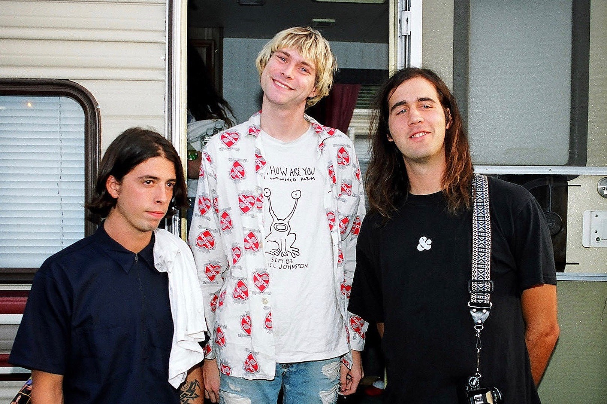
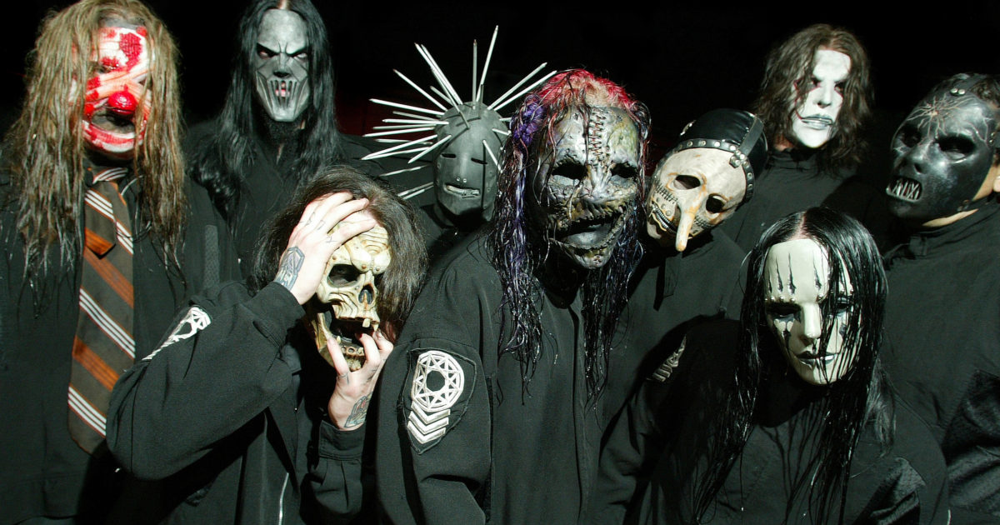

1990 годы
Nirvana
американская рок-группа, созданная вокалистом и гитаристом Куртом Кобейном и басистом Кристом Новоселичем в Абердине, штат Вашингтон, в 1987 году. В составе коллектива сменились несколько барабанщиков; дольше всех с группой играл ударник Дэйв Грол, присоединившийся к Кобейну и Новоселичу в 1990 году.


Slipknot
американская ню-метал-группа, образованная в сентябре 1995 года в Айове, США. Альбомы группы получили статус платиновых, всего продано более 30 млн копий по всему миру из которых 6 миллионов в США. В 2006 году группа получила свою единственную на сегодняшний день премию «Грэмми».
Beastie Boys
американская рэп-рок-группа, образованная в 1979 году в Бруклине, Нью-Йорк. Сформировавшийся состав группы: Mike D, MCA и Ad-Rock.